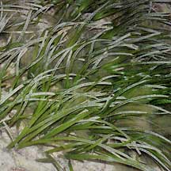
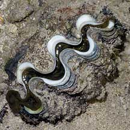

|
|
| index of concepts |
| Singapore
Red List our threatened plants and animals updated Dec 2019 What is a Red List? A Red List is a objective and scientific system for determining threat status of species. The International Union for Conservation of Nature developed an accurate system for use at the national and regional level. The international Red List is generated by the IUCN, but each country is also encouraged to develop their own list. What is the Red List used for? This scientifically evaluated list allows sophisticated biodiversity analyses, which will contribute to scientific discovery and to political policies related to conservation. Governments, the private sector, multilateral agencies responsible for natural resource use, and environmental treaties all need access to the latest information on biodiversity when making environment-related decisions. Information about species and ecosystems is essential for moving towards more sustainable use of our natural resources. The overall aim of the Red List is to convey the urgency and scale of conservation problems to the public and policy makers, and to motivate the global community to try to reduce species extinctions. Some questions that the Red List helps to answer:
Some of the
uses of the Red List include:
What
do the categories on our Red List mean? |
 All our seagrasses are on the Red List. Sentosa, Aug 04 |
 The ancient Coastal horseshoe crab. Pulau Sarimbun, May 05 |
 The attractive Knobbly sea star. Chek Jawa, Jun 05 |
| Why do we still commonly encounter some plants and animals on the
Red List? Aren't they all supposed to be extinct? A plant and animal on the Red List is not necessarily extinct. While some may still be common in a particular habitat or location, these habitats may be much smaller in extent than in the past or under threat of being lost to development. Thus the animals that depend on these habitats are under threat as well. Why is a particular animal on our Red List when they are still very commonly sold and eaten in nearby countries? In Singapore, we have lost many of the natural habitats that are still common in our neighbouring countries. Thus while some plants and animals found in such natural habitats may be common elsewhere, in Singapore, these are under threat of disappearing when their natural habitats are lost. |
 The amazing Giant clam. Raffles Lighthouse, Aug 06 |
 Anemonefishes. Kusu Island, Jun 04 |
 Seahorses. Changi, May 05 |
| Why are some 'extinct' plants and animals
suddenly found? The label extinct depends on non-sighting. This can happen simply because people aren't looking or looking hard enough. Some plants and animals that are labelled extinct may be 're-discovered' through a more thorough search. This is why it is important to regularly visit our shores and natural places. Which animals on wild facts are on our Red List? Here's links to lists and factsheets of some of the plants and animals, currently only marine ones. |
Links
References
|